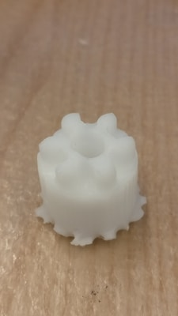
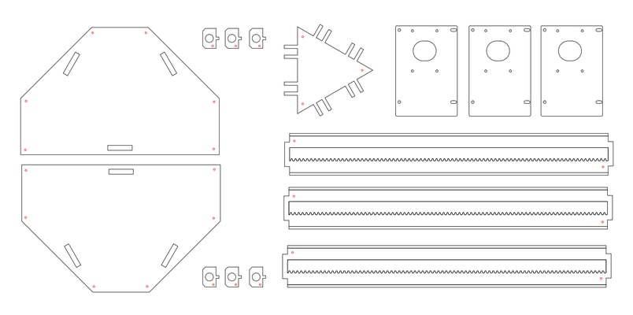
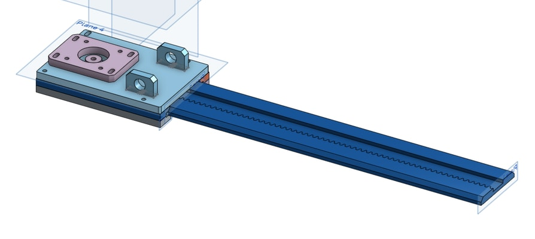
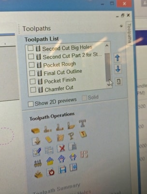

This week is a group project. You can find the group page here.
I was part of the fabrication sub-team. Our job was to take designs and fabricate them. Most of the work was actually in vcarve generating the toolpaths.
The first piece I tried was the pinion. The sharkbot in the EDS shop could take an input stl file and very easily generate the toolpaths. Unfortunately, the sharkbot is too small for most of the things we wanted to fabricate. There was a lot of errors and we learned a lot from the first pinion cut, which didn't turn out good at all. The cut depth should be increased, we used 0.39" for any of the 3/8" pieces. We ended up not using the sharkbot for anything and used the shopbot for all the parts. This was inconvenient because we needed to generate the toolpaths manually.
Most of the parts were made using a sheet of hdpe. The tedious part to these was getting the chamfer line correct. To do chamfer mill, a vector is made 1.25 mm parallel. The toolpath is then directed to move on the line. Our first attempt at the rails failed. The pocket and teeth were not smooth. It turns out that we shouldn't have done the 1/16"" finish and that the toolpath for the pocket was incorrect. This error would set us back a lot of time because the rails tool the longest in time.
The rail was made out of hpde, while the incasing was made out of delrin. The two top pieces needed to have a chamfer. A total of 12 pieces were milled to create 3 sets.

I spent a lot of time using vcarve. From the 2D images I would make the tool paths out of the vectors. You can see here that they usually involed a lot of layers. The key part is that we had 1/16", 1/8", 1/4", and "1/2" bits. Each of these needed to be on seperate shopbot file. All of them required to have small holes too so we could fix the pieces down.
*Many thanks to our TA Gavin.